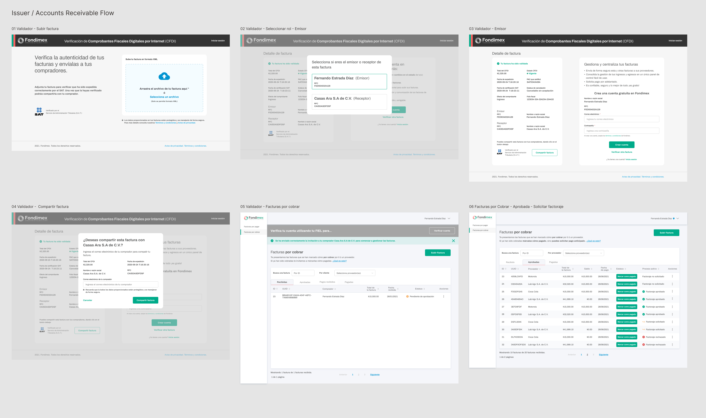
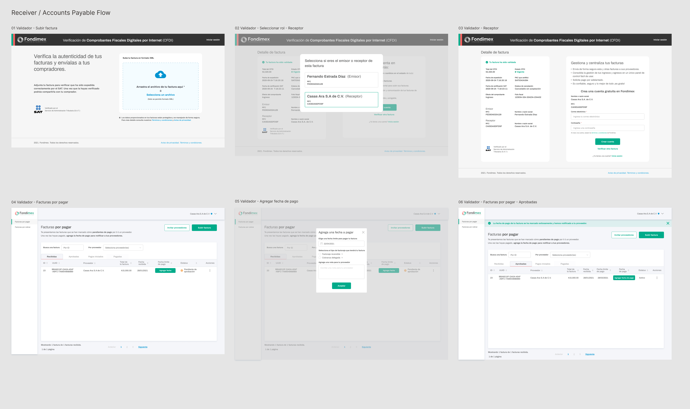
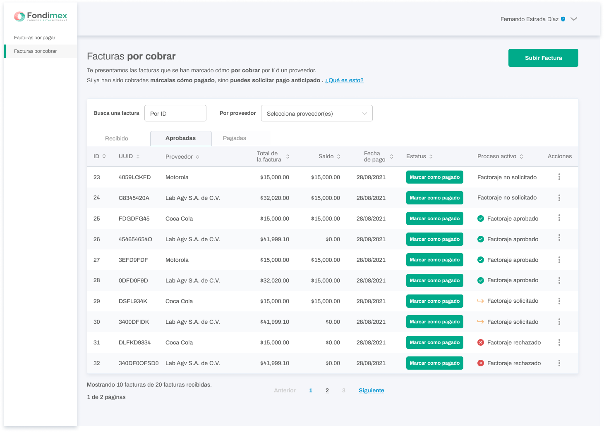
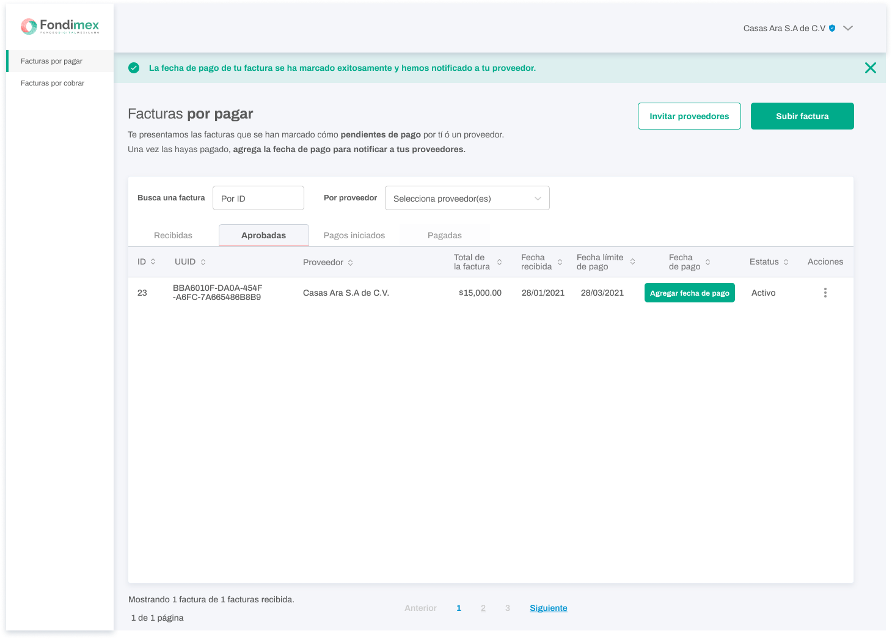

Fondimex
Simplifying CFDI validation, invoice management, and factoring into connected financial workflows for businesses with different roles and responsibilities.
Product Designer
Fondimex Validator
FinTech · Factoring
Role-Based Financial UX
01
The Challenge
Businesses needed a clearer way to validate CFDIs and manage invoices while coordinating payment information between invoice issuers and receivers.
The experience had to account for financial terminology, SAT and FIEL verification, invoice states, payment rules, factoring eligibility, and different responsibilities depending on the user's relationship to the invoice.
The design challenge was not simply to reduce information, but to organize that complexity around the decisions and actions each user needed to take.
02
Goal & My Role
Fondimex Validator was designed as a focused entry point into the broader Fondimex ecosystem.
The product enabled businesses to validate CFDIs, centralize accounts payable and accounts receivable, connect with counterparties, track payment status, and access factoring services when eligible.
As Product Designer, I worked extensively across the end-to-end Validator experience, translating financial rules and business requirements into information architecture, user flows, interaction patterns, prototypes, and product UI.
I collaborated with Business, Engineering, and QA as requirements and financial rules were clarified throughout the product design process.
03
Two Sides of the Same Invoice
One of the most important product decisions was structuring the experience around the user's relationship to the CFDI.
After validating an invoice, the product identified whether the user was the Issuer or Receiver and guided them into the appropriate financial workflow.
Issuer
Manage accounts receivable, monitor payment status, share invoices with counterparties, and request early payment through factoring when eligible.
Receiver
Manage accounts payable, register payment information, add payment dates, and communicate payment status back to suppliers.
Issuer / Accounts Receivable Flow
The Issuer journey moved from CFDI validation and role identification into account creation, counterparty connection, invoice sharing, accounts receivable, and factoring-related actions.

Receiver / Accounts Payable Flow
The Receiver experience used the same validation entry point but transitioned into accounts payable, where users could manage invoices, register payment dates, and notify suppliers as payments progressed.

04
Turning Financial Rules into UX
The product needed to expose enough financial information for users to understand each invoice while keeping the next available action clear.
Validate
CFDI, SAT, FIEL
Identify
Issuer or Receiver
Connect
Counterparty relationship
Manage
Invoice and payment states
Finance
Factoring eligibility and requests
05
Designing Actionable Invoice States
Invoice management required users to quickly understand financial status, payment information, available actions, and factoring progress across large sets of invoices.
Structured tables, filters, tabs, status indicators, and contextual actions helped surface what had happened, what required attention, and what users could do next.
Accounts Receivable
Supported invoices marked as receivable, payment status, payment dates, factoring eligibility, and early-payment requests.
Accounts Payable
Supported invoices pending payment, payment-date registration, payment progress, and communication with suppliers.
Factoring
Made factoring progression visible through states including Not Requested, Requested, Approved, and Rejected.
Business Rules
Incorporated invoice types, deadlines, counterparties, payment information, and specialized financial rules without exposing unnecessary complexity.


06
Connecting Core UX with Growth
Validator also created a natural acquisition opportunity inside the financial workflow.
After validating an invoice, users could share it with their counterparty. If that business was not already using Fondimex, the interaction created an opportunity for them to join the ecosystem.
This connected a core product action—managing an invoice— with product growth without requiring a separate acquisition experience.
07
What I Learned
Financial Complexity
Strengthened my ability to translate financial, regulatory, and factoring rules into understandable product experiences.
Role-Based UX
Learned to design workflows where the same transaction creates different responsibilities depending on the user's relationship to it.
Simplification with Constraints
Reinforced that simplifying financial software does not mean removing required information—it means structuring complexity around decisions and actions.
Product Growth
Gained experience connecting core financial functionality with acquisition opportunities through counterparty relationships.
Detailed launch and product performance information is not included in this public case study.